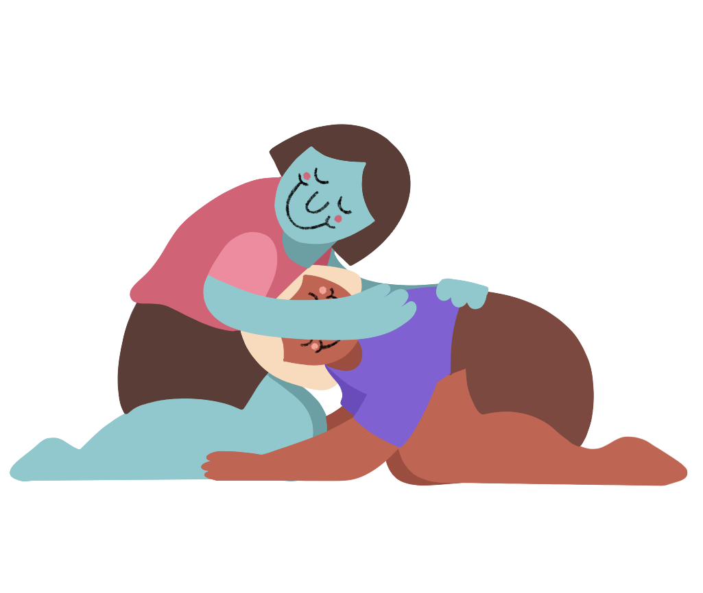
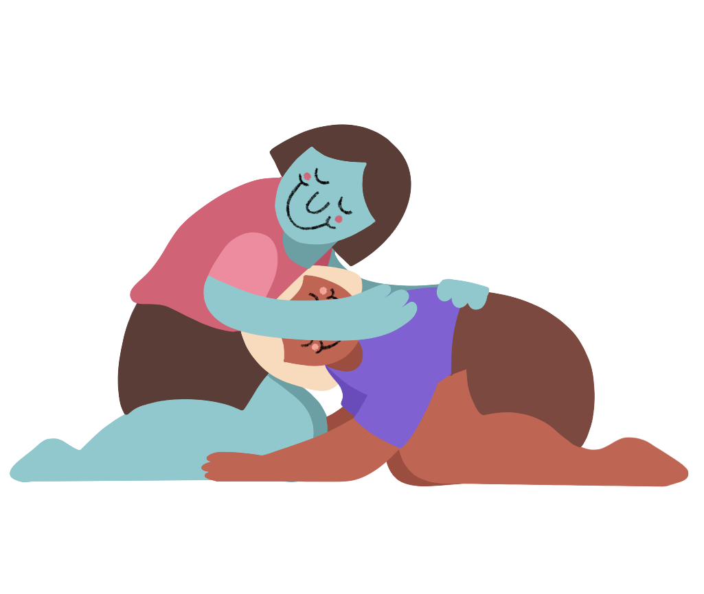

OVERLOOKED
Having a dialogue in and about the queer community is something that is very new in Vietnam. Not until recently, topics regarding the LGBTQ community is still considered taboo or uncomfortable to talk about. To help both the older and younger generation to navigate through these conversations, I wanted to make a website to provide Vietnamese people from the basic knowledge to more complex concepts about this topic.
DEGREE PROJECT WEBSITE
A website that provides Vietnamese audience from the basic knowledge to more complex topics regarding the LGBTQ community. By attracting people to learn more about the queer community in Vietnam through approachable visual language, the website hopes to make people realize that queer Vietnamese people are still lacking a lot of basic rights and protections. And hopefully, this realization will turn into action!
Click here to visit Overlooked!
 
